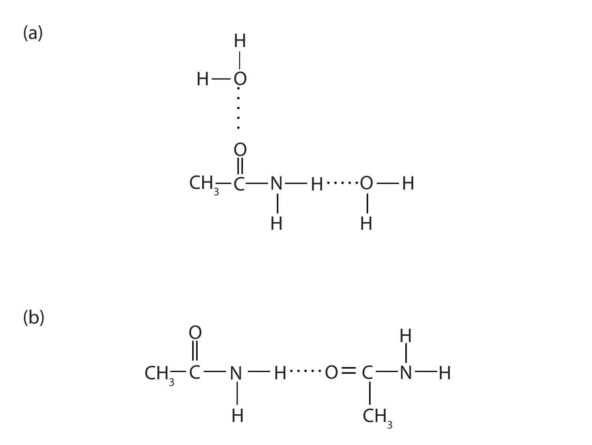

With the exception of formamide (HCONH2), which is a liquid, all simple amides are solids (Table 15.6 "Physical Constants of Some Unsubstituted Amides"). The lower members of the series are soluble in water, with borderline solubility occurring in those that have five or six carbon atoms. Like the esters, solutions of amides in water usually are neutral—neither acidic nor basic.
Table 15.6 Physical Constants of Some Unsubstituted Amides
| Condensed Structural Formula | Name | Melting Point (°C) | Boiling Point (°C) | Solubility in Water |
|---|---|---|---|---|
| HCONH2 | formamide | 2 | 193 | soluble |
| CH3CONH2 | acetamide | 82 | 222 | soluble |
| CH3CH2CONH2 | propionamide | 81 | 213 | soluble |
| CH3CH2CH2CONH2 | butyramide | 115 | 216 | soluble |
| C6H5CONH2 | benzamide | 132 | 290 | slightly soluble |
The amides generally have high boiling points and melting points. These characteristics and their solubility in water result from the polar nature of the amide group and hydrogen bonding (Figure 15.7 "Hydrogen Bonding in Amides"). (Similar hydrogen bonding plays a critical role in determining the structure and properties of proteins, deoxyribonucleic acid [DNA], ribonucleic acid [RNA], and other giant molecules so important to life processes. See Chapter 19 "Nucleic Acids".)
Figure 15.7 Hydrogen Bonding in Amides
Amide molecules can engage in hydrogen bonding with water molecules (a). Those amides with a hydrogen atom on the nitrogen atom can also engage in hydrogen bonding (b). Both hydrogen bonding networks extend in all directions.
Which compound has the higher boiling point—pentanamide (CH3CH2CH2CH2CONH2) or propyl acetate (CH3COOCH2CH2CH3)? Explain.
Which compound is more soluble in water—propanamide (CH3CH2CONH2) or 1-pentene (CH2=CHCH2CH2CH3)? Explain.
pentanamide because the nitrogen-to-hydrogen (N–H) and the carbon-to-oxygen double (C=O) bonds can engage in hydrogen bonding; propyl acetate cannot engage in hydrogen bonding
propanamide because the N–H and C=O bonds can engage in hydrogen bonding with water; 1-pentene cannot engage in hydrogen bonding with water
Which compound has the higher boiling point—butyramide (CH3CH2CH2CONH2) or ethyl acetate (CH3COOCH2CH3)? Explain.
Which compound has the higher boiling point—butyramide or dimethylacetamide [CH3CON(CH3)2]? Explain.
Which compound is more soluble in water—acetamide (CH3CONH2) or 1-butene (CH2=CHCH2CH3)? Explain.
Which compound is more soluble in water—CH3CONHCH3 or 2-methylbutane [CH3CH(CH3)CH2CH3)]? Explain.
butyramide because the nitrogen-to-hydrogen (N–H) and the carbon-to-oxygen double (C=O) bonds can engage in hydrogen bonding; ethyl acetate cannot engage in hydrogen bonding
acetamide because the N–H and C=O bonds can engage in hydrogen bonding with water; 1-butene cannot engage in hydrogen bonding with water